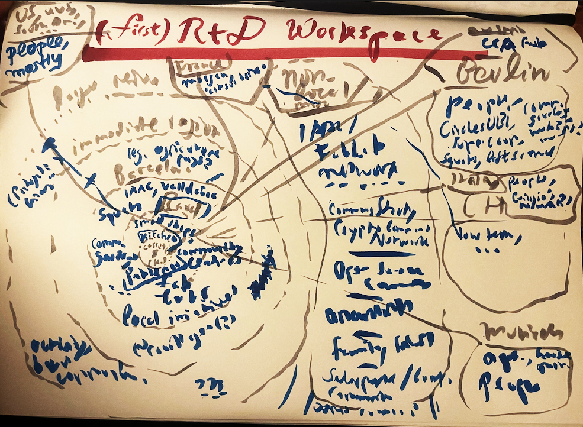

Design Studio¶
Fragments of a communication strategy [13 nov 22]¶
“In love as in war, all is fair, and communication is key” - some dead posh white guy who shouldn’t have squares named after him, probably
Unfortunately, I missed the class on communication (for which this is the deliverable), but I took a look at the shared documents. The idea is to select one of the roles of communication we may use in our (hopefully slowly emerging) project. My project is not clearly defined yet, but it will likely involve some of the following aspects (somehow relevant to communication strategies):
Making diy / dio / distributed circular networked collaborative/cooperative playful production of some useful thing easy, salient and desirable as well as desired.
That’s a mouthful. What I mean is that if I want a simple mid-sized object (which is what I will likely focus on), instead of buying it somewhere, I have the choice to either make it myself or to find someone who can help (teach) me make it, or would like to collaborate on a larger batch (or perhaps some mutualistic exchange which comes conceptually close to buying and should be clarified/explored somewhere else, potentially as part of the project).
Here are some requirements for this to work:
- I must know about the possibility of making it myself
- I must know where to find other people, resources, infrastructure I may need
- I must have acces to at least the designs of means of production if not the means themselves, as well as instructions/ methods etc
- I must want to do it
The last aspect is especially interesting, because it can involve such a broad range of strategies. It involves; I think, at least two main aspects:
- I must feel that it’s relatively easy to do / doesn’t require that much effort, or that it is difficult but fun
- I must think it’s cool / desirable to do it
This stands in contrast to an alternative approach which I reject: trying to make people feel guilty about not engaging in circular and maker economies. I think making a socially and ecologically regenerative practice desirable is much more effective or at least not tried enough.
The first aspect requires modular, well communicated instructions /“recipes”, and perhaps a dashboard-like view of available resources, collaborators, etc. As well as access to tools / means of production which make things easy or possible.
The second requires a variety of culture jamming / proaganda / marketing / artistic / etc efforts… and is probably the most fun to do.
For now, I think I will focus on designing as a first prototype an object that helps me diy/dio something, together with an ‘algorithm’ for easy, playful, pleasureful production use. The second part is the focus (for now) of my communication efforts (making fun / open-ended/ modular/etc instructions, whith an eye towards re-using it and embedding it in potential emergent protocols for diy/dio production.
 The opponent’s strategy: consumer capitalism shaping desires around convenience and building lack of agency, stoking fear of complexity
The opponent’s strategy: consumer capitalism shaping desires around convenience and building lack of agency, stoking fear of complexity
Getting started: roles of prototyping [23 oct 22]¶
“The prototype is the end product” - an AI generated face with a bright smile, trying to sell you a 12-part online course, probably
The different roles of prototyping¶
As a first active engagement with this topic, we were asked to reflect on the following four roles of prototyping: * the prototype as an experimental component (1) * the prototype as a means of inquiry (2) * the prototype as a research archetype (3) * the prototype as a vehicle for inquiry (4)
Roles used¶
I’m not trained as a designer and don’t have much experience prototyping. The quite broad understanding of prototyping implied in the course materials might be applied to various activities I’ve engaged in in the past (though for some of them, this might be stretching things a bit far).
-
writing poetry, translations, essay type texts: I tend to write iteratively, first writing a paragraph or a sentence without much thought, reading it aloud in my head, then editing the text, again and again. This makes working with a typewriter difficult. -> role (1), maybe (4)
-
cooking: I enjoy simple recipes that can be made in a pan filled with olive oil. The first prototype might be eggplant with garlic, a second prototype eggplant with garlic, and ginger. The third, eggplant with garlic, ginger, and mint. (A connection could be made here to distributed design and its similiarity to recipes.)
-
Though I did not necessarily actually use a prototyping approach, political activity and educational workshops could also benefit from it. And to some extent, perhaps I did use such an approach.
Roles not used¶
The roles (2), (3), (4) are the ones I used the least.
Roles (or combinations thereof) of interest, potential projects¶
The roles I find most interesting are those that require showing one’s work to other people, seeing how they react, what they think. In a similar vein, it would be interesting to create an object (or a practice) - perhaps based on the needs or desires of a particular project or community - and ‘release it’ into the world to recieve feedback and collect information about it. This chimes with my more general goal of doing more things instead of just thinking about them, and trying things out with people instead of alone.
The first ‘workspace’ [23 oct 22]¶
This is the first prototype of my workspace (right-click, new-tab to zoom) :
